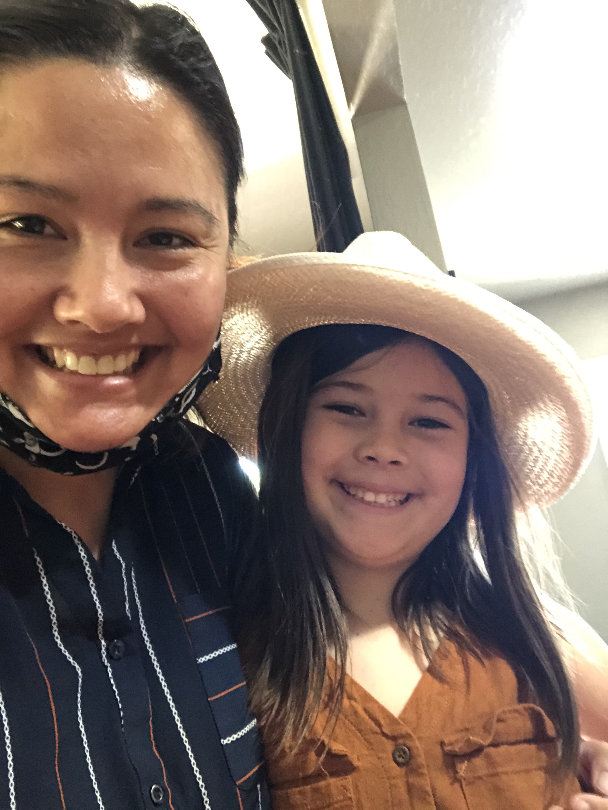

Emi and Sadie!!!
Emi is 7 years old and Sadie is 37 years old. They are best friends and also they are family. They sometimes meet each other at Lola and Skipper's house. Lola and Skipper are Emi's grandparents and Sadie's mom and dad.
